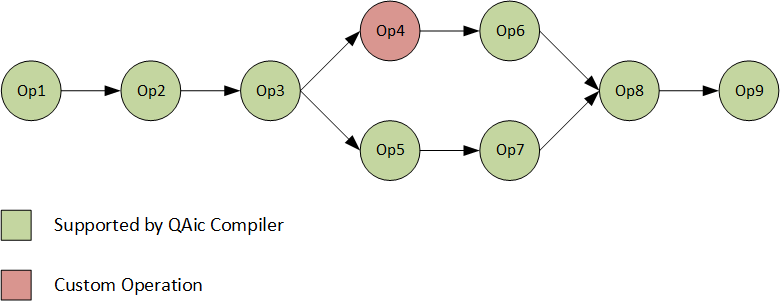
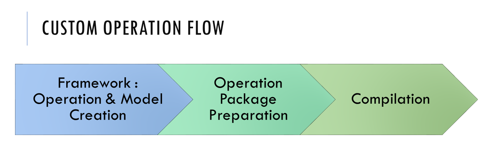
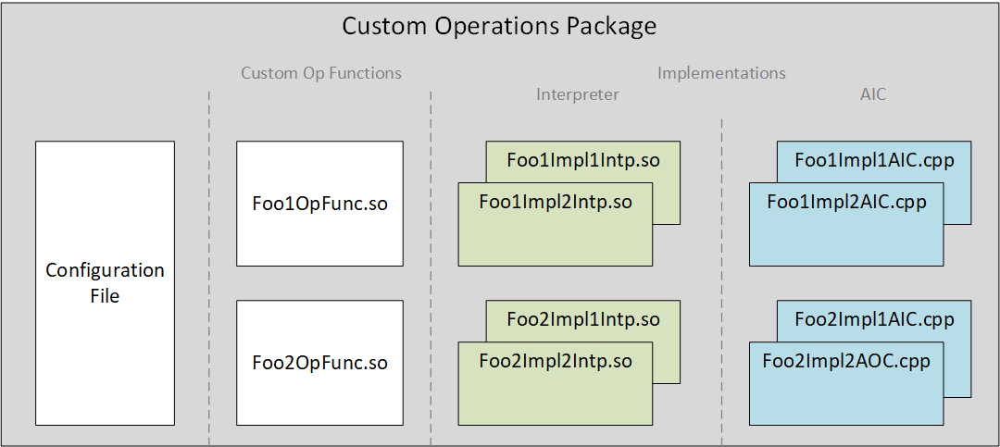
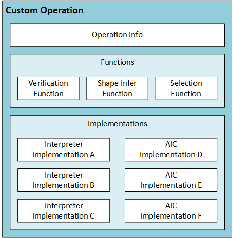
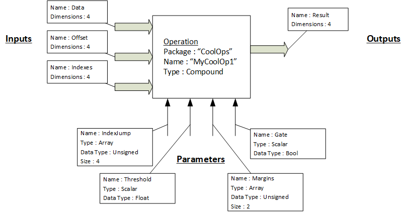
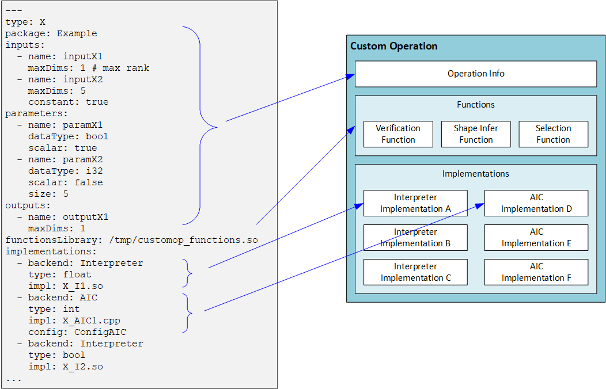
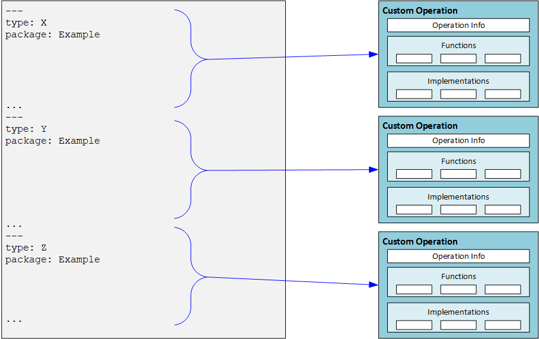
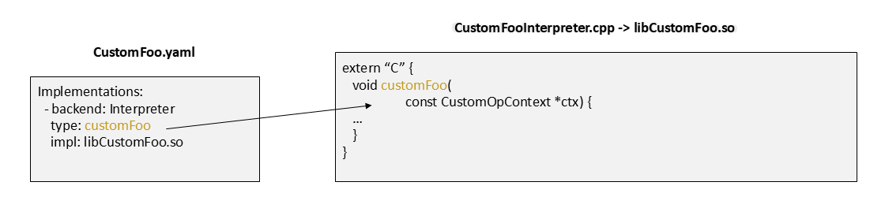
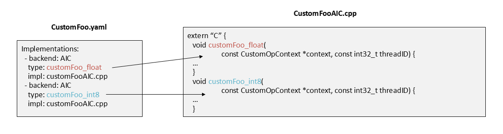

Custom operations (C++)¶
Custom operation allows you to add an operation into the graph, which is unknown to the Cloud AI (also known as QAic) compiler. For example, a certain graph isn’t part of the operation set supported for the various models that the compiler knows to load and compile. With custom operations, you can register a new operation prior to loading or defining the graph, and then use this new operation in the new graph created. The QAic compiler uses the registration information to create a graph which you can compile.

As an example, ONNX node definition supports domains. You can create an ONNX model file that has nodes that come from the non-default domain, and then register these nodes definition in the QAic compiler.
Custom operations workflow¶
There are three stages to create and work with a custom operation.

The first stage is to create the custom operation in one of the machine learning frameworks such as PyTorch or TensorFlow. After creating this operation, it’s added to a machine learning model and the model is trained. The resulted model trained is stored for inference - either as ONNX file or TensorFlow saved model. For each framework/trained-model, the way to specify a custom operation is a bit different, and as such the way QAic Compiler knows to identify the custom operation varies. Current version supports Custom Operations for ONNX Models. More details on it below.
The second stage is to prepare a package for the custom operation/s, which contains:
The information needed for QAic Compiler to integrate the operations in the ML graph.
Implementations to be used when compiling the graph to a binary. The content of this stage is explained in details on next sections.
The third stage is compilation. In order to compile a model that has the custom operation inside, the operation package needs to be registered first. After successful registration, the model can be loaded and compiled using qaic-compile.
Custom operation package¶
The custom operations package is prepared by you, and contains all files needed to register operations within the compiler. Tag the custom operations package with a version number to ensure that your customer operation package is compatible with the installed Apps SDK.
The files in the custom operations package are used by the QAic compiler to compile that model into a binary. The following drawing shows the content of a package, and the next sections describe each component in details.

Briefly:
The configuration file describes the version number, custom operations and related files, and is used by the QAic Compiler to bootstrap the package, registering its content within the compiler.
Custom Op Function files (
Foo1OpFunc.so,Foo2OpFunc.so) contain utility functions used by the compiler during compilation of the model.Implementation files contain the implementations of the operations for different compilation targets. Also, you can provide multiple implementations (selected by the
selectionfunction).
Although the custom operation package can be written as described in the next
sections, it’s recommended to use the utility script
/opt/qti-aic/tools/custom-op/gen_custom_op_package.py to generate
the structure of the custom operations package. The script
takes in an ONNX or Tensorflow model and generates a package for each
custom operation present in the input model. For more details run the following:
python3 /opt/qti-aic/tools/custom-ops/gen_custom_op_package.py --help
After the skeleton code is generated for custom ops, user needs to write the necessary functionality that is specific to custom operations, like the kernel, verification, selection, shape inference function as described in the next sections.
Model a custom operation¶
To better understand the content of the package, this section briefly discusses what’s needed to model any machine learning operation, so that it can be placed in a graph and compiled. The following diagram shows modeling of one operation.

The Operation Info block in the diagram represents the modeling of the operation itself as a black box, which you need to be connect inside a graph. In order to do that, provide basic information about the operation (name, type), as well as describing the inputs, outputs and parameters of the operation.

You can model any operation in a machine learning graph (not just custom operations) by defining its set of inputs, outputs, and parameters. The inputs and outputs are tensors. Inputs come from the operations before this one, and outputs are the tensors created by the operation, and provided to the operation or operations that comeafter. For the inputs and outputs, you need to specify the maximal rank supported by the operation. The actual values per dimension are populated by the compiler during graph creation. Parameters are the constant values provided to the operation as part of the configuration, for example, kernel size and alpha value. Parameters can be scalar (single value) or a vector of values.
In addition to the operations information, the modeling of the operation includes a collection of utility functions and implementations.
Utility functions help the compiler during the compilation. You must implement the following functions.
Verification function: Receives a set of inputs, outputs and parameters, populated with actual values that the operation is going to work on. The function should validate that the values are correct and the operation can support this combination.
Shape inference function: Receives a set of inputs and parameters, populated with actual values that the operation is going to work on. The function is doing shape inference of the outputs. For example, it returns the tensor size on each dimension.
Selection function: Receives a set of inputs, outputs and parameters, populated with actual values that the operation is going to work on. In addition it receives the compilation target (AIC or Interpreter). The function returns a string containing the name of the adequate implementation to use for this configuration.
Configuration file¶
The configuration file is part of the custom operation package. There is a single configuration file which provides the required information for all operations in package. The file is YAML formatted. The following is an example of a configuration file for a single operation.

The configuration file contains a version number which indicates the
custom operation package version. The compiler uses the file to verify
compatibility of the custom operation package and the installed Apps SDK.
Operations are described in the CustomOps section. Each operation
section has the following:
Operation Info, defining the operation
name,type,inputs,outputsandparams.For each input and output, the relevant fields are the
nameandmaxDims(maximal rank of the tensor)For input, there is also optional constant field, which can be true/false, to indicate if it’s a constant.
For each parameter, the relevant fields are
name,datatype(bool, float, int),scalar(true or false).If parameter
scalarfield isfalse, meaning this is an array (1d vector), and then need to providesize.Optionally, you can request for scratch memory to store and load intermediate computations inside the kernel.
Location of the custom operation functions
Implementations
The information provided per implementation is as follows:
target
Backend.type: used by the backend during selection process (see explanation next).impl: location of the implementation file.config(optional): additional information on this implementation, to be used by the backend.compilerArgs(optional): hexagon-clang compiler options specific to the AIC backend implementation. This can be used to specify additional include directories, compile time MACROS, and so on. User is responsible for passing valid compilation options using this field.
The configuration file can provide the information for multiple operations. in this case, each operation is defined in a separated YAML section. The following is an example configuration file.

Custom operation functions¶
You must provide a shared library which has three
functions: verification, shape inference, and selection. The path to the
shared library, as well as the library name, is specified in
functionsLibrary field of the configuration file.
The API of these functions is C, and defined in CustomOpFunctions.h.
The types used are defined in CustomOpTypes.h.
Verification function¶
The compiler uses the verification function at the graph construction stage to validate that the custom operation implementation supports the combination of inputs, outputs, and parameters.
{C++}
bool customOpVerify(const CustomOpPropertiesHandle *const opProp)
Shape inference function¶
The compiler uses the shape inference function at graph construction stage to receive the output dimensions expected by the custom operation.
In some models, specifying the output dimensions is optional so the compiler has no way to known the output dimensions of a custom operation (for internal known operations, it has shape inference functions).
The function receives the input dimensions and parameters, and is expected to fill in the correct output dimensions.
{C++}
bool customOpInferShape(CustomOpPropertiesHandle *const opProp)
Selection function¶
By design, the custom operation lets you provide multiple implementations suitable for different configurations.
For example, you can provide implementation for float vs. one for integer or provide specialized implementation for specific parameter value.
Implement the selection function to return the adequate flavor of custom operatopm implementation based on the node configuration (inputs, outputs, parameters) The returned string represents the flavor. Used by the Backend Op repository to select the proper implementation based on configuration information (see details on config information).
{C++}
const char \*customOpSelectImpl(const CustomOpPropertiesHandle *const opProp,
const CustomOpKernelInfo *const kernelInfos,
const int32_t numKernels, const char *backend)
Implement custom operations¶
You must implement the compilation targets (Interpreter, AIC) and register them in the configuration file.
This section describes the implementations signatures and relation with the configuration file. The SDK comes with custom operation examples which show how such implementations look like, and how do they get build
Implement the interpreter¶
The interpreter implementation is provided to the compiler as a shared
library (or collection of shared libraries). Each shared library can
contain multiple versions (flavors) of implementations of the operation,
referred onwards as kernels. A kernel is selected at model compilation
time by the selection function. The developer is responsible for
compilation of these shared libraries. Because the interface is in C, you can compile the shared libraries using compilers such as GCC or CLANG.
In addition, because these shared libraries are running on the host computer, the
developer can open files, dump results, and use stdout and stderr for printing
debug messages. This makes the Interpreter implementation a
very effective way to debug the operation functionality as part of
model execution.
The signature of the kernel (implementation) is generic, and fits any custom operation. It contains a pointer to custom op context.
{C++}
typedef void (*customOpInterpreterKernel_t)(
CustomOpContext *ctx)
The signature is defined in
/opt/qti-aic/dev/inc/CustomOpInterpreterInterface.hThe relevant types defined in
/opt/qti-aic/dev/inc/CustomOpTypes.hCustomOpContext is defined in
/opt/qti-aic/dev/inc/CustomOpContext.h
The order of inputs, outputs, and parameters has to match the order defined in the configuration file. During the model compilation, the compiler is organizing the inputs, outputs and params passed to the kernel based on that order.
When creating an implementation, create a kernel (or multiple kernels) which has the signature as above and compile it into a shared library. For example:
{C++}
void customFoo (CustomOpContext *ctx) {
// Foo implementation is here
}
The next section explains how the mapping between library / kernel name and compile-time selection is happening.
Configuration information and implementations¶
The compiler uses the information in the implementations section of
the configuration file and the selection
function, to allocate the proper implementation or kernel and use it. When
the target is interpreter, and the compiler encounters a custom
operation, it does the following:
Calls the selection function.
Based on returned string, looks for the specific implementation in the
implementationssection, by trying to make thetypefield of each.Opens the shared library in the
implfield.Tries to get a function pointer (using
dlsym()), using the name specified in thetypefield.
Make sure that the kernel names in the
code or shared-library match the string as it appears in the type field.
Implement AIC¶
The AIC implementation is provided as a C/C++ file. Just like in the
case of interpreter target, you can provide a file (or
multiple files) with multiple kernels (implementations) of the custom
operation. The AIC compilation target API is similar to the Interpreter
API, except for an additional thread identifier, threadId, passed to
it.
{C++}
typedef void (*customOpAICKernel_t)(
const CustomOpContext *context,
const int32_t threadId)
You can use up to four threads available on the AI
core. When the compiler generates the code, it calls the
implementation four times, one time from each thread, passing to it the
current threadID. This allows the compiler to maximize performance
during compilation by taking full advantage of the hardware. AIC
implementation signature is defined in
/opt/qti-aic/dev/inc/CustomOpAICInterface.h.
Configuration information and AIC implementations¶
Similarly to the interpreter target, when compiling to the AIC target, the
compiler uses the information in the implementations section of the
configuration file to allocate the proper implementation or kernel and use it.
Calls the selection function.
Based on returned string, looks for the specific implementation in the
implementationssection, by trying to make thetypefield of each.Looks for the C/C++ file in the
implfield.Tries to find a kernel using the name specified in
type.
Writing tiled custom operations¶
Custom operations, by default, are configured to compile and run on one neural signal processor (NSP). You can configure custom operations to run in a tiled manner so that computation, along with inputs and outputs, can be split and distributed across multiple NSPs. Computing on tiled inputs and outputs helps boost performance because computation is split to execute in parallel on multiple NSPs with reduced memory footprint. Do the following to tile an operation:
Specify tilability of each output of the custom operation by configuring fields of
TileConfigHandledata structure accessible incustomOpSetTileConfigfunction. This step describes two things:Axis along which an output can be sliced to form tiles, and
Alignment requirement for each axis that should be considered before slicing an output to form a tile. See
/opt/qti-aic/dev/inc/CutomOpTileCon8fig.hfor details.
Provide the mapping of each output tile to its corresponding input tiles using
customOpMapTilesfunction. Compiler uses each outputsTileConfigHandleinformation to determine its tile size. The tiled outputs are made available in thecustomOpMapTilesfunction so that you can provide a mapping of output tiles to corresponding input tiles. For example, if compiler splits each output of a custom operation into N tiles thencustomOpMapTilesis invoked N times, once per output tile.
If the parameters configured by the user in customOpSetTileConfig
and customOpMapTiles are valid, then the compiler tiles the custom
operation, otherwise the operation isn’t be tiled.
NSP cores on the AIC hardware don’t have a shared memory. Due to this, when an operation is tiled,
ensure that all required input dependencies to compute a tiled output are mapped accurately in the
customOpMapTiles function.
Request scratch memory¶
Custom operations can require scratch memory to store and load
intermediate computations within the kernel. You can request scratch memory in the configuration file under the Operation Info section by specifying the name and size of the required buffer(s) as
follows:
scratchBuffers:
- name: scratchBuf1
size: 1024 # size in bytes.
- name: scratchBuf2
size: 2048 # size in bytes.
Scratch buffers, allocated by the compiler, exist throughout the lifespan of a custom operation function call, but the content isn’t preserved between calls.
The compiler tries to allocate these buffers in the device VTCM. However, its allocation in the VTCM isn’t guaranteed.
Scratch buffers are accessible only within the custom operation implementation through the
CustomOpContext*, which is available to every implementation.Scratch buffers remain untiled even when the custom operation is tiled and the requested scratch buffer size is available to each tiled custom operation.
{C++}
float *buf1 = (float *)customOpContext->scratchBuffers[0].buf;
int *buf2 = (int *)customOpContext->scratchBuffers[1].buf;
int buf1Size = customOpContext->scratchBuffers[0].size;
int buf2Size = customOpContext->scratchBuffers[1].size;
Configure the memory for the AIC backend¶
VTCM, DDR, and CacheableDDR memory locations are available on the device. As shown in the following example, you can use memoryConfig in the YAML configuration file to specify a
memory placement preference for each input, output, and scratch buffer
associated with the custom operations so that the compiler can prioritize buffer
placement.
- implementation
- backend: AIC
type: funcName
impl: fileName.cpp
memoryConfig:
#DDR/VTCM/CacheableDDR: [<comma separated list of in/out/scratch names>]
DDR: [inName1, outName2]
CacheableDDR: [inName2]
VTCM: [scratchBufName1]
requiredFor: [inName2, scratchBufName1]
As shown in the previous example, there are three preference lists available (VTCM, DDR, and CacheableDDR). If an input, output, or scratch buffer is listed
under the VTCM list, compiler tries to place the listed
buffer in the devices VTCM location. However, the placement in VTCM isn’t guaranteed by the compiler. The same holds true for the entries in the
rn whenever your preferred memory configuration can’t be satisfied
during model compilation.
If placement of a particular buffer in the specified memory location is
a stringent requirement, then you can add it to the
requiredFor list. If the compiler fails to allocate a buffer that’s
listed in the requiredFor list, then the model
compilation fails with an error message.
Altering the default memory configuration can change overall performance of the model because the memory locations are also used by the compiler for other operations in the model. Use the following guidelines for better performance:
VTCM is efficient for vector memory accesses.
CacheableDDRis efficient for scalar memory accesses.DDR access is relatively slower.
Synchronize threads on the AIC backend¶
Custom operation kernels on the AIC backend can use four threads
running on the NSP. You can synchronize all threads, if needed, using the
sync function pointer from the CustomOpContext.
customOpContext->syncThread(threadId);
Execution waits for all threads to reach syncThread before
proceeding.
Log messages to the AIC backend¶
Loggin is available through printf style macros
AIC_PRINT_*, defined in CustomOpLog.h. This allows runtime logging
on the AIC target. For 64-bit values. wrap the argument with
AIC_LOG64 macros.
AIC_PRINT_INFO(ctx, "decimal num: %d; unsigned num: %u; C-string: %s;",
-1, 0xFF, "myCustomOp");
AIC_PRINT_INFO(ctx, "int64_t HEX num: 0x" AIC_LOG64X_FMT, AIC_LOG64_DATA(0x1122334455667788));
AIC_PRINT_INFO(ctx, "fp32 num: %f", 3.141590f);
To collect logs automatically, run the QAic monitor service on the host computer. This requires to issue a one-time command on host to start Qmonitor:
sudo /opt/qti-aic/scripts/qaic-monitor-service.sh start
Different log message types are available: AIC_PRINT_DEBUG,
AIC_PRINT_INFO, AIC_PRINT_WARN, AIC_PRINT_ERROR, and
AIC_PRINT_FATAL, each corresponding to decreasing level of
verbosity. Compiler option, AIC_CUSTOMOP_LOG_COMPILE_LEVEL, controls
verbosity level which can be set to: AIC_CUSTOMOP_LOG_LEVEL_FATAL,
AIC_CUSTOMOP_LOG_LEVEL_ERROR, AIC_CUSTOMOP_LOG_LEVEL_WARN,
AIC_CUSTOMOP_LOG_LEVEL_INFO (default), or
AIC_CUSTOMOP_LOG_LEVEL_DEBUG. All message types above given
verbosity level are filtered out.
You can override AIC_CUSTOMOP_LOG_COMPILE_LEVEL using the compilerArgs field on the custom operation configuration YAML file as shown in the following example:
implementations:
- backend: AIC
compilerArgs: -DAIC_CUSTOMOP_LOG_COMPILE_LEVEL=AIC_CUSTOMOP_LOG_LEVEL_ERROR
Logs are collected in the /var/log/qti-aic/QID_\ folders, with each
AIC device having its own folder. You can add a maximum of ten format specifiers to a single format string when using AIC_PRINT*() with the AIC
backend. AIC_PRINT_* macros map to print when a custom operation is
compiled for backends other than AIC.
You can configure the log verbosity level at runtime using qaic-log
tool with -c n and -s NNNetwork flags as shown in the following example.
/opt/qti-aic/tools/qaic-log -l <log_level> -c n -s NNNetwork
In the previous code example, <log-level> is first letter of log level, that is any of
f/e/w/i(default)/d. For more details, run the following:
qaic-log -h
Datatype support¶
Custom operations support various data types for tensors and parameters as
listed in CustomOpDataType. The data type of input and output tensors
of custom operations (CustomOpIOtensor) can be one of the following types:
float, float16_ty (AIC backend only), and int8_t, depending
on the selected compilation option. CustomOpTensor is a float type when the model is compiled with float precision.
Similarly, when the model is compiled with the -convert-to-fp16 flag or
using a quantization profile, tensors are float16_ty or
int8_t type, respectively. Using different datatypes for tensors is
limited. You can also use int8_t, int16_t, int32_t, and int64_t
to represent index types. Tensors aren’t quantized
when index types are specified in the input model, irrespective of the
model compilation options chosen.
When model is quantized using a quantization profile
CustomOpIOTensor_s are quantized using a scale and offset. You can
dequantize input and output _CustomOpIOTensor data using the
scale and offset as follows:
dequant(x) = (x - offset) * scale, where scale and offset
are accessible from CustomOpContext using the following APIs:
float getInputScale(const CustomOpContext *ctx, const int32_t inputIdx);
int32_t getInputOffset(const CustomOpContext *ctx, const int32_t inputIdx);
float getOutputScale(const CustomOpContext *ctx, const int32_t outputIdx);
int32_t getOutputOffset(const CustomOpContext *ctx, const int32_t outputIdx);
Other software components, like AI Model Efficiency Toolkit (AIMET) or profile-guided quantization (PGQ) profiler, can represent quantization parameters differently, but that doesn’t affect how custom operations represent scale and offset.
Capabilities and limitations¶
The custom operation code can use any basic C/C++ functionality, including control code, loops, etc. In addition, the code can use HVX intrinsic for using the embedded vector units. The code is limited to run on a single AI Core of the overall number of available cores.
When implementing AIC, there are the following limitations:
Typical OS services don’t exist on the hardware. You can’t use STDIO to write logs, open files or create threads.
Dynamic memory allocation isn’t supported. Only static memory allocation is allowed. Avoid using
malloc/new,stddata types (likestd::vectorwhich requires dynamic allocation), or defining arrays with an unknown size at compile time (likearray[argument #6]).
Compilation¶
As explained in Compiler Tools, qaic-compile is a command-line sample
application, provided in the Apps SDK both as code and as prebuilt
binary. It supports compiling and running a model.
For supporting custom operations, a new command-line option was added to
qaic-compile.
-register-custom-op=<config-file> Register custom op using this configuration file
Specify multiple times to register multiple configs
Here is an example for running qaic-compile with a model which has custom
operations, and providing a configuration file.
/opt/qti-aic/exec/qaic-compile -m=./mlp_custom.onnx -register-custom-op=./CustomReluConfig.yaml
-aic-hw -aic-hw-version=2.0 -input-list-file=input.list -write-output-dir=./
-write-output-start-iter=1 -write-output-num-samples=1
Next steps¶
End-to-end examples of custom operations are available in the Apps SDK at
/opt/qti-aic/examples/apps/custom-op/.When writing code to run on AIC, you can use the HVX intrinsic to use the internal vector units of the AI Core. For more information about the HVX intrinsic, download the Qualcomm Hexagon V68 HVX Programmers Reference Manual from the Hexagon NPU SDK Documentation page.